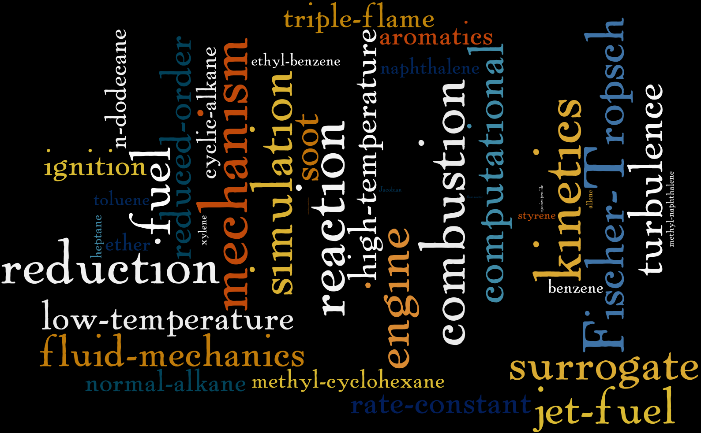

Krithika Narayanaswamy
Postdoctoral AssociateSibley school of Mechanical and Aerospace Engineering
Cornell University
Rhodes Hall, Room 633,
Ithaca, NY-14853
kn295 (at) cornell (dot) edu
Research
I work with Prof. Perrine Pepiot. My research revolves around chemical kinetic mechanism development for surrogates of real fuels. I am currently exploring reactive flow simulations as well. 
Journal publicationsClick each item for more details
|
Alma materVIVEKANANDA VIDYALAYA DAV IIT MADRAS STANFORD |